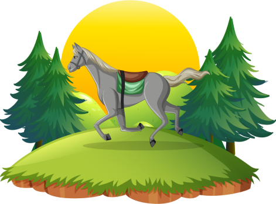
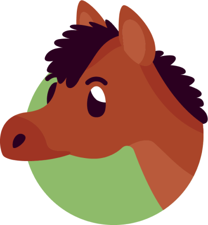
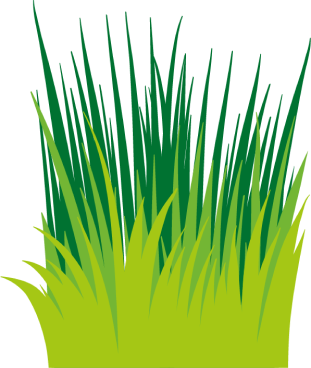

Hábitat: Se adaptan a diversas regiones, desde las praderas hasta las montañas.



Dieta: Son herbívoros, se alimentan específicamente de pasto y heno. Su sistema digestivo es único y eficiente.
Características Físicas: Cuerpo musculoso, su melena y cola fluyentes, y sus ojos expresivos. Son domésticos durante miles de años.